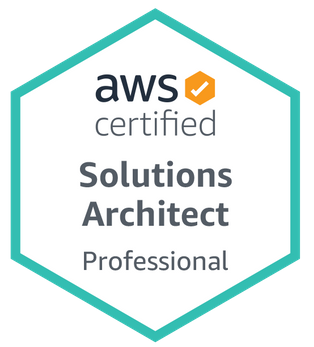
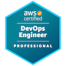
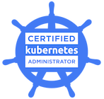
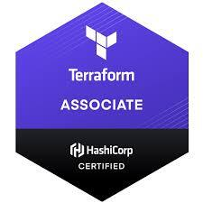
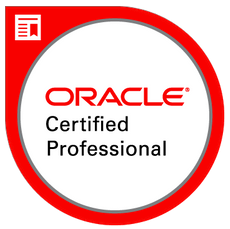

78
Environments migrated from AWS to Azure, within planned outage windows and budget
Based in Australia · Full-stack cloud engineer
Full-stack cloud engineer: web development, backend programming and cloud infrastructure across Azure, AWS and Oracle Cloud.
I work across the whole stack: web front ends in HTML, CSS and JavaScript, backend services and REST APIs in Python (FastAPI) and C# (.NET), and the cloud infrastructure that runs them on Azure, AWS and Oracle Cloud (OCI), automated end to end with Terraform, Kubernetes and CI/CD.
01 · Impact
Every figure below is from delivered work, not estimates.
78
Environments migrated from AWS to Azure, within planned outage windows and budget
$400K
Annual cloud spend removed (USD $1.5M → $1.1M) through FinOps and architecture changes
3,000
Databases fed by a Kafka integration platform across six AWS accounts
50
Multi-region environments brought in-house from a managed service provider
<1 hr
Environment provisioning, down from days or weeks, via self-service
Weekly
Release cadence, up from monthly, through pipelines and Infrastructure as Code
36
AWS accounts run at a life insurance and wealth organisation via automated account, VPC and ECS factories
3
Cloud platforms I architect and build on: Azure, AWS and Oracle Cloud
Annual cloud spend
FinOps across AWS and Azure
Annual spend $1.1M · removed $400K
02 · Profile
I'm a full-stack cloud engineer with 7+ years across cloud, DevOps and engineering. I write the code (HTML, CSS and JavaScript on the web side, Python with FastAPI and C# (.NET) on the backend), and I design and run the infrastructure underneath it across Microsoft Azure, AWS and Oracle Cloud.
At an education technology organisation I set the platform engineering direction for a multi-cloud estate: I brought it back in-house from a managed service provider, rebuilt it as a containerised platform run entirely through code, and led the program that moved 78 environments from AWS to Azure with engineers in Australia, the UK and India.
I'm deeply hands-on, and usually the go-to technical authority on the platforms I work on. I design the architecture, then build it myself: Terraform modules, pipeline templates, self-service environments, FastAPI services, and code reviews across C# and Python. I'm as comfortable explaining platform risk, cost and trade-offs to executives as I am in the code, and I mentor the engineers around me along the way.
Before that I worked across Microsoft Azure, AWS, Oracle Cloud, VMware and enterprise integration at a major life insurance and wealth management organisation, a government-owned energy utility, and on financial technology and not-for-profit projects at an AWS cloud consultancy, including rewriting a C# monolith as Python FastAPI services.
03 · Code → cloud
Platforms built from reusable Terraform modules and pipeline templates, so every environment starts from an approved, secure pattern. (Illustrative example.)
04 · Prompt → platform
Type a request or pick a preset. This is a scripted, offline demo: no AI and no network calls. The replies are pre-written, illustrative, and based only on the work described on this page.
Hi! Ask me to change the platform, or try a preset below.
05 · Migration in motion
78environments
moved to Azure
06 · Delivery
Manual deployments replaced by pipelines and Infrastructure as Code: releases moved from monthly to weekly.
07 · Expertise
Full-stack cloud engineering, from the code in the browser to the platform it runs on.
Kubernetes (AKS, EKS, OCI Container Engine; CKA certified), Docker and ECS Fargate, rolling deployments, and serverless with AWS Lambda, Azure Functions and the Serverless Framework.
Front ends in HTML5, CSS3 and JavaScript. I deploy and migrate websites on AWS, Azure and OCI with CloudFront and Azure CDN, SSL certificates, WAF and DDoS protection, nginx and Apache web servers, and automated CI/CD deployments.
REST APIs in Python with FastAPI, C# (.NET) services and Lambda functions, and Kafka producers and consumers in both languages. Test-driven development, localstack integration tests and SonarCloud scans keep the code honest.
SQL Server, Aurora PostgreSQL, MySQL, MongoDB, DynamoDB, Cosmos DB and Oracle ATP; Liquibase schema management; event streaming with Kafka, Kafka Connect and Debezium; Service Bus, SQS and SNS messaging.
AKS, Azure Functions, App Service, Blob Storage, Service Bus, Logic Apps, ExpressRoute, Entra ID and Azure DevOps, including a 78-environment platform move from AWS to a multi-subscription Azure estate.
ECS Fargate, Lambda, API Gateway, CloudFront, RDS and Aurora, MSK, Organizations and Control Tower, with multi-account designs from 25 to 36 accounts. Certified Solutions Architect and DevOps Engineer, both Professional level.
Platform design to the Well-Architected Framework (VCNs, subnets, peering, gateways and security lists), Oracle Integration Cloud, Autonomous Transaction Processing (ATP), OCI Vault and FastConnect hybrid connectivity. OCI Architect Professional.
Terraform modules, CloudFormation, ARM, Ansible and Packer, with pipelines on Azure DevOps, GitHub, Buildkite, Jenkins, GitLab, Bitbucket and AWS CodePipeline.
Secure-by-design platforms: WAF, AWS Shield, private PKI, SSO with Entra ID, AWS SSO and Okta. Also observability with Datadog, Prometheus, Grafana and ELK, DR testing, and FinOps practices.
08 · Cloud migrations
From managed services, data centres and legacy pipelines to modern, automated platforms.
09 · Notable projects
Education technology · Platform engineering
A library of reusable Terraform modules, standard Azure DevOps pipeline templates and on-demand environments that delivery teams create and tear down without raising tickets. New services start from an approved, secure pattern.
Education technology · FinOps
Architecture changes, Savings Plans, Reserved Instances and automated environment scheduling across AWS and Azure, plus monthly budget-versus-actuals reporting and the post-migration cost models used to set the annual budget.
Financial technology · Data streaming
Kafka (MSK), Debezium and Kafka Connect on ECS, streaming on-premises SQL Server data to 3,000 databases across six AWS accounts, with C# consumers, Python producers and SonarCloud scans.
Life insurance & wealth · Security
A root private CA plus production and non-production subordinate CAs, built through GitHub and CodePipeline and shared to organisational units via AWS RAM.
Life insurance & wealth · Automation
Step Functions, Lambda and CloudFormation automation that provisioned new accounts into AWS Organizations with Route 53 resolver rules and Active Directory connectivity, across 36 AWS accounts.
Energy utility · Observability
CloudWatch, Azure and OCI alarms routed through EventBridge and SNS; Prometheus and Grafana monitoring; and a Kinesis Firehose pipeline streaming Talend logs into Elasticsearch and Kibana in near real time.
Education technology · Engineering quality
Introduced test-driven development across C# and Python codebases, set the design and code review standards for security and quality, and built REST APIs in FastAPI with testability in mind. Delivery moved from waterfall to Scrum with tracking in Azure Boards.
Facilities management SaaS · Architecture
Decoupled the application with SQS, SNS, Lambda and SES, wrote all infrastructure in Terraform, and ran workloads on ECS Fargate with Savings Plans to reduce cost.
10 · Experience
A global education technology organisation
An AWS cloud consultancy
A major life insurance & wealth management organisation
A government-owned energy utility
A facilities management SaaS company
11 · Tech stack
12 · Credentials





RMIT University
K S Institute of Technology (VTU)
13 · Contact
Always happy to talk about cloud, code and platform engineering with fellow engineers.
akachroo762@gmail.com
↑↓ move↵ select/ or Ctrl K to open